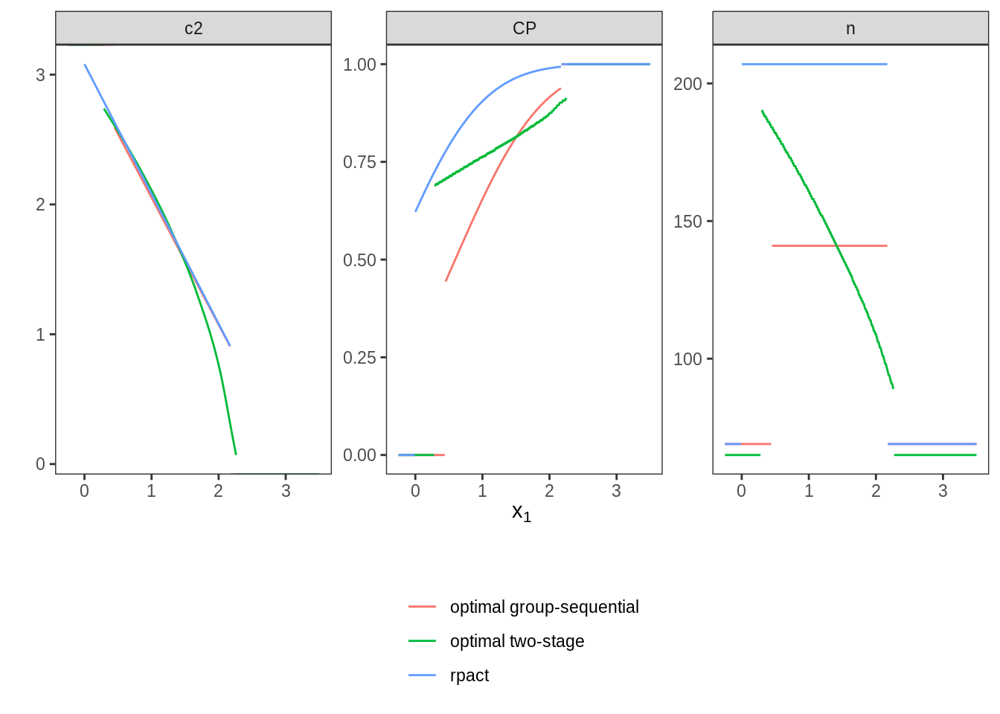

7 Scenario VI: binomial distribution
7.1 Details
In this scenario, the implemented normal approximation of the binomial distribution is evaluated. There are two treatment groups \(E\) (experimental) and \(C\) (control) and the outcome of interest is the event rate in both groups. The event rate in the control group is assumed to equal \(p_C = 0.3\). Under the null hypothesis, the rate difference \(p_E - p_C = 0\) is assumed. Under the alternative, the rate difference is assumed to equal \(p_E - p_C = 0.2\). Type one error rate should be protected at 2.5% and the design’s power should be at least 90%.
7.2 Variant VI-1, efficiency of optimal designs for binomial distribution
In this variant, it is evaluated whether the optimization leads to more efficient designs and is plausible with published results.
7.2.1 Objective
Expected sample size under the alternative point mass prior \(\delta = 0.2\) is minimized.
7.2.2 Constraints
No additional constraints are considered.
7.2.3 Initial Designs
For this example, the optimal one-stage, group-sequential, and generic
two-stage designs are computed.
The initial design for the one-stage case is determined heuristically
and both the group sequential and the generic two-stage designs are
optimized starting from the corresponding group-sequential design as
computed by the rpact package.
order <- 7L
# data frame of initial designs
tbl_designs <- tibble(
type = c("one-stage", "group-sequential", "two-stage"),
initial = list(
OneStageDesign(200, 2.0),
rpact_design(datadist, 0.2, 0.025, 0.9, TRUE, order),
TwoStageDesign(rpact_design(datadist, 0.2, 0.025, 0.9, TRUE, order))) )The order of integration is set to 7.
7.2.4 Optimization
7.2.5 Test Cases
To avoid improper solutions, it is first verified that the maximum number of iterations was not exceeded in any of the three cases.
tbl_designs %>%
transmute(
type,
iterations = purrr::map_int(tbl_designs$optimal,
~.$nloptr_return$iterations) ) %>%
{print(.); .} %>%
{testthat::expect_true(all(.$iterations < opts$maxeval))}## # A tibble: 3 × 2
## type iterations
## <chr> <int>
## 1 one-stage 28
## 2 group-sequential 1774
## 3 two-stage 4736Next, the type one error rate and power constraints are verified for all three designs by simulation:
tbl_designs %>%
transmute(
type,
toer = purrr::map(tbl_designs$optimal,
~sim_pr_reject(.[[1]], .0, datadist)$prob),
power = purrr::map(tbl_designs$optimal,
~sim_pr_reject(.[[1]], .2, datadist)$prob) ) %>%
unnest(., cols = c(toer, power)) %>%
{print(.); .} %>% {
testthat::expect_true(all(.$toer <= alpha * (1 + tol)))
testthat::expect_true(all(.$power >= min_power * (1 - tol))) }## # A tibble: 3 × 3
## type toer power
## <chr> <dbl> <dbl>
## 1 one-stage 0.0251 0.900
## 2 group-sequential 0.0249 0.900
## 3 two-stage 0.0249 0.901Since the degrees of freedom of the three design classes are ordered as
‘two-stage’ > ‘group-sequential’ > ‘one-stage’,
the expected sample sizes (under the alternative) should be ordered
in reverse (‘two-stage’ smallest).
Additionally, expected sample sizes under both null and alternative
are computed both via evaluate() and simulation-based.
ess0 <- ExpectedSampleSize(datadist, H_0)
tbl_designs %>%
mutate(
ess = map_dbl(optimal,
~evaluate(ess, .$design) ),
ess_sim = map_dbl(optimal,
~sim_n(.$design, .2, datadist)$n ),
ess0 = map_dbl(optimal,
~evaluate(ess0, .$design) ),
ess0_sim = map_dbl(optimal,
~sim_n(.$design, .0, datadist)$n ) ) %>%
{print(.); .} %>% {
# sim/evaluate same under alternative?
testthat::expect_equal(.$ess, .$ess_sim,
tolerance = tol_n,
scale = 1)
# sim/evaluate same under null?
testthat::expect_equal(.$ess0, .$ess0_sim,
tolerance = tol_n,
scale = 1)
# monotonicity with respect to degrees of freedom
testthat::expect_true(all(diff(.$ess) < 0)) }## # A tibble: 3 × 7
## type initial optimal ess ess_sim ess0 ess0_sim
## <chr> <list> <list> <dbl> <dbl> <dbl> <dbl>
## 1 one-stage <OnStgDsg> <adptrOpR [3]> 124 124 124 124
## 2 group-sequential <GrpSqntD> <adptrOpR [3]> 96.2 96.2 89.7 89.8
## 3 two-stage <TwStgDsg> <adptrOpR [3]> 94.3 94.2 98.5 98.6The expected sample size under the alternative must be lower or equal than
the expected sample size of the initial rpact group-sequential design that
is based on the inverse normal combination test.
testthat::expect_lte(
evaluate(ess,
tbl_designs %>%
filter(type == "group-sequential") %>%
pull(optimal) %>%
.[[1]] %>%
.$design ),
evaluate(ess,
tbl_designs %>%
filter(type == "group-sequential") %>%
pull(initial) %>%
.[[1]] ) )Finally, the rpact group-sequential design,
the optimal group-sequential design, and the optimal generic two-stage design
are plotted to allow visual inspection.
